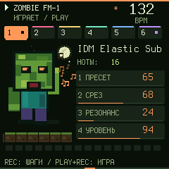
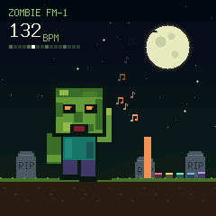

Если установка у вас «зависла», а экран FM-1 стал чёрным, FM-1 не сломан: он ждёт в режиме загрузчика. Причиной была ошибка установщика: в фоновой вкладке браузер замедлял передачу почти до нуля. Теперь это исправлено. Во время установки держите вкладку открытой, а если запись всё же встанет, обновите страницу и нажмите «Найти FM-1» → «Установить». Подробно: «Помощь».
M-VAVE FM-1 · USB MIDI
Прошивка FM-1 прямо из браузера
Шесть дорожек, 128 пресетов, драм-машина, пианоролл. Установка займёт около минуты. Нужны кабель USB и Chrome или Edge.
- 6 TRACKS
- 128 PRESETS
- 16 DRUMS
- 64 STEPS
- RU / EN


Веб-установщик
Установить в FM-1
- Браузер с Web MIDI (Chrome, Edge, Opera на компьютере)
- Защищённое соединение (HTTPS)
- Файл прошивки скачан и проверен (SHA-256)
-
1 Выберите прошивку
Другие версии (архив)
-
2 Подключите FM-1
Подключите FM-1 кабелем с передачей данных и включите его. Закройте FL Studio, Ableton и другие вкладки, которые используют MIDI. Браузер попросит разрешение на MIDI: нажмите «Разрешить».
Устройство не найдено
-
3 Установите
-
4 Готово
FM-1 перезапустится. Установщик дождётся устройства и проверит новую версию.
0.18.1 beta
Что нового в 0.18.1: 4 заставки и «О системе»
- Банк ZMB: 32 новых пресета (слоты 97–128): 808, вобл-басы, ривз, суперсо, синтвейв, хоррор-атмосферы.
- Зомби на главной качает головой в такт, открывает рот под звук, машет руками; ноты разлетаются цветными искрами.
- Ночная заставка: через минуту без касаний — луна, летучие мыши, кладбище; во время игры — темп и шесть «свечей» дорожек.
- При включении зомби вылезает из земли. Карточки ручек вспыхивают при повороте, за курсором шагов бежит след.
- 0.18.1: четыре заставки (ночь, синтвейв, матрица, лого): на заставке держи HOME, чтобы сменить. HOME дважды — живой экран «О системе». Исправлено: на FM-1 заставка не появлялась.
- Звук, проекты и управление 0.17 не изменились. Попробуйте в эмуляторе до установки.
Главное управление
- ALGO выбирает дорожку, шестая — драмка. SELECT задаёт темп.
- SEQ: 16 белых клавиш ставят шаги; зажми шаг и крути ручки. SEQ + K1: число шагов. EDIT удаляет ноту.
- REC с главной: отсчёт и живая запись по кругу. На SEQ — по шагам. REC + HOME: слой записи.
- EDIT + OCT−/OCT+: отмена и повтор. SAVE: сохранить проект.
- Драмка на SEQ: OP1–OP6 выбирают звук, PITCH/GLOBAL листают группы.
- HOME + SEL: Standalone → DAW Synth → DAW Controller.
Если что-то пошло не так
FM-1 не включается после установки
- Если установка зависла, а экран FM-1 чёрный, FM-1 ждёт в режиме загрузчика: обновите страницу, выберите ту же версию, нажмите «Найти FM-1», затем «Установить». Во время установки не переключайте вкладку и не сворачивайте браузер.
- Подключите FM-1 к компьютеру кабелем с данными и включите. Подождите 1–2 минуты: после двух неудачных запусков прошивка сама включает SAFE MODE (надпись «IT CRASHED TWICE»).
- Если появился SAFE MODE или красный экран «CRASH»: откройте эту страницу, выберите 0.14.0, нажмите «Найти FM-1», затем «Установить».
- Если экран чёрный, но компьютер видит новое USB-устройство или диск WL80UBOOT1.00, это аппаратный режим обновления чипа. Не форматируйте этот диск. Через него возвращается заводская прошивка M-VAVE V15 (fm1_rescue), после этого Zombie ставится снова.
- Если ничего не появляется, попробуйте другой кабель и порт, зарядите FM-1 и выключите его на 10 секунд.
FM-1 не находится
- Нужен кабель с передачей данных: зарядный кабель не подойдёт.
- Закройте DAW и все вкладки редактора или эмулятора, подключённые к FM-1.
- Нажмите на значок замка в адресной строке, разрешите MIDI-устройства и обновите страницу.
- Оставьте подключённым только один FM-1.
USB отключился во время записи
Не паникуйте: загрузчик FM-1 остаётся рабочим. Подключите кабель снова, выберите ту же версию, нажмите «Найти FM-1», затем «Установить». Запись начнётся заново, и результат проверится после перезапуска.
Установщик пишет «Open-прошивка»
На FM-1 стоит официальная Open-прошивка M-VAVE, и она принимает только штатную FM-1 V15. Сначала верните её официальным установщиком M-VAVE, затем установите Zombie.
Звук трещит или новая версия не нравится
Откройте «Другие версии» и установите 0.18.0 или стабильную 0.8.3. Перед откатом на 0.13.5 и старше экспортируйте проект в JSON в редакторе. 0.18.1 проверена в эмуляторе и тестах.
Как вернуть заводскую прошивку M-VAVE
Воспользуйтесь официальным установщиком M-VAVE для FM-1 (V15). Сохранённые в Zombie проекты при этом не переносятся.